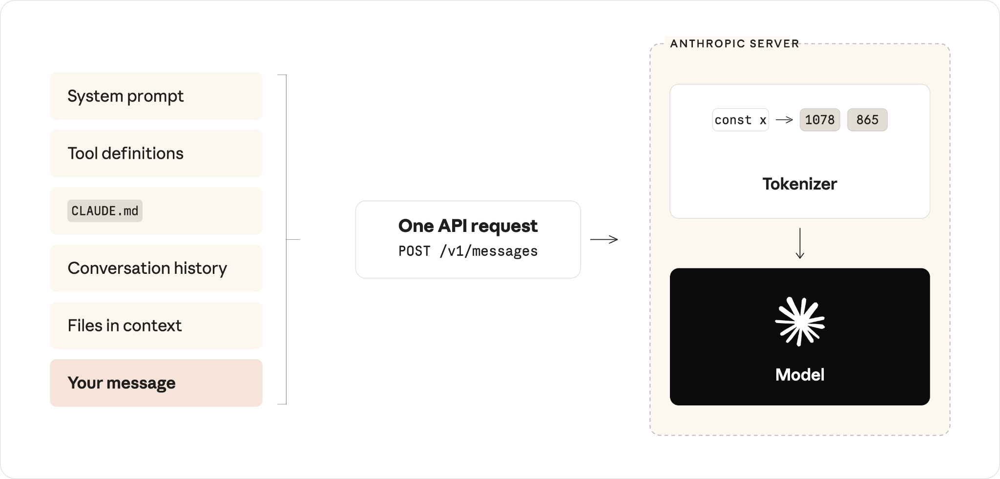
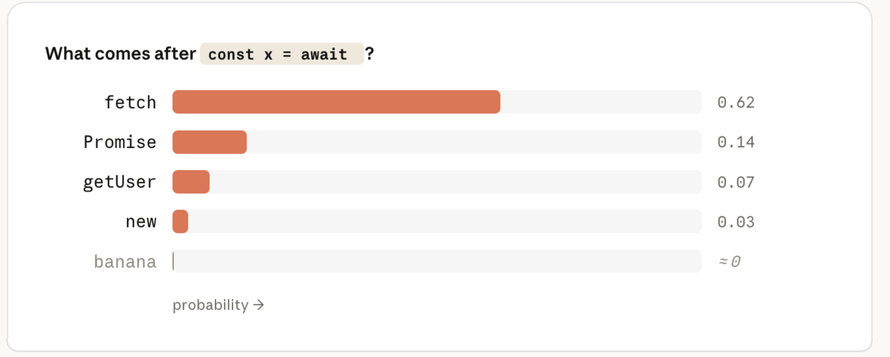
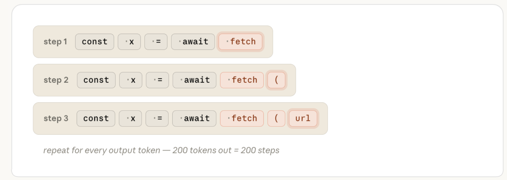
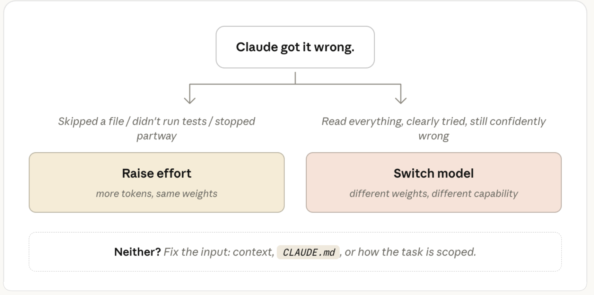
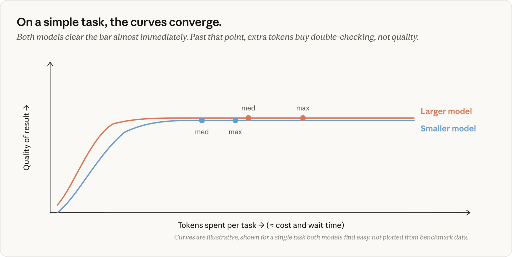

핵심 요약
Claude Code는 "답을 더 좋게 만드는" 것처럼 보이는 두 가지 설정을 제공합니다. 바로 모델 설정과 노력(effort) 수준입니다. 아마 당신은 Claude Fable 5 같은 더 큰 모델이 Claude Sonnet보다 더 똑똑한 출력을 내놓을 것이고, 더 높은 노력 수준은 Claude가 답하기 전에 더 오래 생각하는 것이라고 예상할 것입니다.
첫 번째 가정은 맞습니다. 업계 표준 벤치마크 기준으로, 우리의 가장 큰 모델들이 더 유능합니다.
하지만 노력은 단순한 "생각하는 시간" 이상을 의미합니다. 노력 수준은 Claude가 당신의 요청 전반에서 얼마나 많은 작업을 하는지를 제어합니다. 여기에는 모델이 얼마나 오래 생각하는지도 포함되지만, 그 밖에도 다음이 포함됩니다.
더 높은 노력에서는 Claude가 당신에게 돌아오기 전에 이런 행동들(예: 파일 읽기, 테스트 실행, 재확인)을 더 많이 합니다. 더 낮은 노력에서는 스스로 알아내려고 토큰을 쓰기보다는 당신에게 더 많은 컨텍스트를 물어보는 쪽을 택합니다.
당신이 엔터를 누르면, Claude Code는 당신의 메시지를 시스템 프롬프트, 도구 정의(tool definitions), 당신의 CLAUDE.md, 대화 기록, 그리고 컨텍스트에 들어 있는 파일들과 함께 하나로 모읍니다. 이 모든 것이 하나의 요청으로 API에 전송됩니다.

하지만 모델은 그것을 평범한 텍스트로 보지 않습니다. 서버에서 가장 먼저 일어나는 일은 토큰화(tokenization)입니다. 텍스트가 조각으로 나뉘고, 각 조각이 모델이 학습된 고정 어휘(vocabulary)에서 하나의 정수로 매핑됩니다. const는 1978로, await는 4293으로 매핑될 수 있습니다. 이 시점부터 당신의 프롬프트는 정수 배열입니다.

모델의 일은 그 배열을 받아 다음에 어떤 토큰이 올지 예측하는 것입니다. 모델은 자신의 어휘에 있는 모든 토큰에 대해 확률을 계산하고 그중 상위에서 하나를 골라 이를 수행합니다. const x = await 다음에, 잘 학습된 모델은 fetch(매우 그럴듯함)에 높은 확률을, banana(전혀 그럴듯하지 않음)에는 거의 0에 가까운 확률을 부여합니다.

당신의 입력 토큰을 이런 확률로 바꾸는 것이 바로 가중치(weights)(파라미터(parameters)라고도 함)입니다. 이는 큰 행렬들로 조직된 수십억 개의 숫자입니다. 토큰 하나를 예측하기 위해, 모델은 당신의 입력을 그 행렬들, 즉 긴 행렬 곱셈의 사슬을 통과시키고 끝에서 확률을 읽어 냅니다. 가중치는 모델이 "아는" 모든 것이 들어 있는 곳입니다.
각 모델의 가중치는 학습 중에 정해지며, 당신이 요청을 보낼 때쯤이면 읽기 전용입니다. 당신의 프롬프트, CLAUDE.md, 또는 컨텍스트에 있는 그 무엇도 가중치를 바꾸지 않습니다. (혹시 추론(inference)이라는 단어를 접한 적 있다면, 그것이 뜻하는 전부입니다. 학습이 끝난 뒤, 가중치가 고정된 상태로 모델을 사용하는 것 말입니다.)

TypeScript, 인기 있는 프레임워크, 관용적인 Go, 또는 그 밖의 일반 프로그래밍 지식에 대해 Claude가 아는 모든 것은 학습 시점에 그 가중치 안으로 인코딩되었습니다.
당신의 프롬프트와 컨텍스트는 여전히 예측을 이끌(steer) 수 있지만(당신의 실제 코드를 Claude 앞에 놓는 것이 스티어링(steering)이며, 이는 매우 잘 작동합니다), 가중치 자체에 무언가를 더하지는 않습니다.
모델이 학습될 때 어떤 라이브러리가 존재하지 않았다면, 그것은 가중치 안에 없습니다. 문서를 컨텍스트에 넣으면 Claude가 그것을 사용하겠지만, 그것은 스티어링이지 가르치는 것(teaching)이 아닙니다. Claude의 응답은 오직 그 요청에 한해서만 영향을 받습니다. 밑바탕의 모델은 그 정보를 보존하지 않았습니다.
그래서 Claude가 존재하지 않는 API를 자신 있게 호출할 때(할루시네이션), 그것은 실패한 조회가 아니라, 학습 패턴에서 그럴듯해 보이는 토큰 시퀀스를 가중치가 만들어 내는 것입니다.
그렇다면 모델을 바꾸면 실제로 무슨 일이 일어날까요? 그것은 어떤 고정 가중치 집합이 당신의 요청을 처리할지를 바꿉니다.
모델은 답 전체를 한 번에 생성하지 않습니다. 토큰 하나를 예측해 시퀀스에 덧붙이고, 다음 토큰을 얻기 위해 전체 계산을 다시 돌립니다. 200토큰짜리 응답은 가중치를 통과하는 200번의 별개 패스입니다. 이 루프가 당신의 대기 시간과 출력 비용 대부분이 발생하는 곳입니다.

따라서 모델 설정은 어떤 가중치가 당신의 요청을 처리할지 결정하고, 각 출력 토큰의 비용이 얼마인지도 결정합니다.
모델 설정이 결정하지 않는 것은 얼마나 많은 토큰이 생성되는지입니다. 그 숫자는 Claude가 얼마나 많은 작업을 하기로 하는지에 따라 같은 프롬프트라도 크게 달라질 수 있습니다.
이것이 바로 노력(effort) 수준이 제어하는 것입니다. 즉, Claude가 매 턴마다 얼마나 많은 작업을 하기로 하는지 말입니다.
Claude Code가 작업을 하고 있을 때, 그것이 생성하는 토큰은 몇 가지 범주로 나뉩니다.
Read나 Edit 같은 도구와 그 인자를 지정하는 구조화된 블록으로, Claude Code가 이를 파싱해 실행합니다.이들은 모두 같은 루프에서 나오는 평범한 출력 토큰이며, 같은 요율로 청구됩니다. 예를 들어, 사고 토큰은 다른 출력 토큰과 똑같이 생성되고 해당 턴의 나머지 동안 컨텍스트에 남아 있습니다.
Claude가 코드 작성으로 넘어갈 때, 앞선 추론은 그것이 읽은 파일과 마찬가지로 입력의 일부가 됩니다.

노력은 이 모든 것을 어떻게 바꿀까요? 노력 수준은 당신의 프롬프트 바로 옆에 붙어 요청의 일부로 모델에 전달됩니다. 모델은 각 노력 수준에서 어떻게 행동해야 하는지 이해하도록 학습되었고, 그 학습된 행동은 고정된 가중치 안에 새겨져 있습니다.
당신의 요청이 도착하면, 노력 수준은 모델이 프롬프트 텍스트에 반응하는 것과 똑같은 방식으로 반응하는 또 하나의 입력입니다. 이것은 Claude가 작업을 끝났다고 여기기 전에 얼마나 철저하고 얼마나 확신해야 하는지에 대한 행동을 설정합니다.
이것은 매 턴마다 고려되며, 더 높은 확신의 답을 내기 위해 더 많은 토큰을 낳습니다.

더 높은 노력 수준에서 Claude는 흔히 계획을 세우는 것으로 시작하며, 노력 수준은 그 계획의 깊이와 폭에 영향을 줍니다. 그러나 그 계획은 고정되어 있지 않습니다. Claude가 자신의 행동으로부터 결과를 받으면, 지금까지 이룬 진행 상황과 누적된 결과에 대해 얼마나 확신하는지를 갱신합니다.
그래서 세 가지 가설로 이루어진 디버깅 계획의 1단계에서 버그를 찾아냈다면, "가설 2와 3을 조사하라"는 더 이상 필요한 행동이 아닐 수 있습니다. Claude는 보통 이를 명시적으로 말합니다. "첫 번째 점검에서 찾았으니 나머지 점검은 필요 없습니다"라고 하며 건너뜁니다. Claude Code에서 작업 목록이 실행 도중에 수정되는 것을 볼 때 바로 이 일이 일어나는 것입니다.
Claude는 더 높은 노력 수준에서 추가 가설을 재확인하거나 정확성을 검증하는 경향이 더 강해지지만, 높은 노력 수준이라 해서 간단한 작업에 사용량을 인위적으로 부풀리지는 대체로 않습니다. 사실 우리 팀은 모델 학습 중 "과잉 사고(overthinking)"에 세심하게 주의를 기울입니다. 그것이 효과성을 떨어뜨리기 때문입니다.
우리의 지침은 대부분의 작업에서는 모델의 기본 노력 수준을 사용하라는 것입니다. 기본값은 대부분의 사람들이 어떤 작업에 쓰고 싶어 할 만한 정도에 맞춰 Claude가 토큰 사용량을 조절하는 수준입니다.
노력을 Claude가 얼마나 열심히, 얼마나 오래 일할지를 조절하는 수동 오버라이드라고 생각하세요. 당신의 분야나 하는 일의 성격에 따라 철저함이나 속도에 대한 강한 선호가 있을 때 의도적으로 고르세요. 이것은 작업마다 내리는 결정이라기보다 일반적인 선호로 여기는 편이 좋습니다.
Claude Opus 4.8 출시 이후에 방향을 잡는 데 도움이 될 만한 실용적인 통찰 하나: 우리 테스트에서, Opus 4.8에 기본 노력 설정을 사용하면 같은 작업에 대해 Opus 4.7의 기본 노력 설정을 사용할 때와 거의 같은 수의 토큰으로 더 나은 결과를 냈습니다.
Claude가 무언가를 틀렸을 때, 당신의 첫 본능은 다이얼을 조정하는 것이 아니라 당신이 제공한 컨텍스트를 살펴보는 것이어야 합니다. 프롬프트가 너무 모호한가요? Claude가 올바른 도구에 연결되어 있나요? 올바른 스킬(skills)을 갖추고 있나요?
정말 필요하지 않을 작업에 노력을 올리고 있다면, 해결책은 흔히 상류에, 즉 당신의 컨텍스트, CLAUDE.md, 또는 작업이 어떻게 범위 지어졌는지에 있습니다.
하지만 당신이 명확한 컨텍스트를 제공했는데도 Claude가 여전히 무언가를 틀렸다고 가정해 봅시다. 스스로에게 던져야 할 질문은 이것입니다. 충분히 시도하지 않은 것인가, 아니면 충분히 알지 못한 것인가?

문제가 정말로 어려울 때는 더 큰 모델을 고르세요. 예를 들어 미묘한 버그, 익숙하지 않은 도메인, 아키텍처 결정 같은 문제들입니다. 더 큰 모델은 아무리 많은 컨텍스트를 줘도 작은 모델이 자신 있게 틀리는 상황에서 도움이 됩니다.
더 큰 모델은 모호함을 다루는 데도 더 낫습니다. 반면 작은 모델에서는 실행을 지시하는 구체적인 지침이 성공의 더 나은 비결입니다.
일이 일상적일 때는 더 작은 모델을 고르세요. 예를 들어 정확히 서술할 수 있는 편집, 기계적인 변경, 또는 이미 컨텍스트에 들어 있는 코드에 대한 질문 같은 것입니다. 작업에 필요하지 않은 역량에 돈을 낼 이유가 없습니다.
Claude가 관련 컨텍스트를 모두 갖고 분명히 시도했는데도 여전히 틀렸다면, 그것은 더 큰 모델을 골라야 한다는 신호입니다. 반대로 당신이 더 큰 모델을 쓰고 있고 한동안 작업이 일상적이었다면, 한 단계 낮추면 속도가 빨라지고 출력 품질에 영향을 주지 않으면서 대체로 비용이 줄어듭니다.
Claude가 파일을 건너뛰거나, 테스트를 돌리지 않거나, 자신의 작업을 재확인하지 않아서 틀렸다면 더 높은 노력 수준을 고르세요. 이는 모델의 기본값보다 낮은 노력 수준을 선택했을 때 가장 관련이 큽니다.
두 설정이 어떻게 관계되는지 제가 즐겨 생각하는 방식 하나: Fable은 거의 아무도 본 적 없는 문제들을 봐 온 스페셜리스트, Opus는 전문가, Sonnet은 정말 뛰어난 제너럴리스트입니다. 노력 수준은 이들 각자가 당신의 작업에 얼마나 많은 시간을 쓰는지를 결정합니다.
낮은 노력의 Opus는 당신 같은 문제에 깊은 경험이 있는 전문가와 5분을 보내는 것과 같습니다. 그들은 당신의 코드베이스 어디에도 없는 지식을 가져옵니다. 전에 본 패턴, 확인해야 할 함정, 비슷한 문제를 많이 풀어 본 사람에게서만 얻을 수 있는 그런 것들 말입니다. 하지만 딱 5분만 준다는 것은 당신의 코드를 꼼꼼히가 아니라 빠르게 훑는다는 뜻입니다.
높은 노력의 Sonnet은 정말 뛰어난 제너럴리스트에게 오후 전체를 주는 것과 같습니다. 그들은 모든 것을 읽고, 이것저것 실행해 보고, 자신의 작업을 재확인하며, 결국 당신의 특정 코드를 철저히 이해하게 됩니다. 그들이 덜 가져오는 것은 "이거 정확히 전에 본 적 있어" 하는 그 인식입니다.
낮은 노력에서조차, Fable은 다른 모두가 막혀 있는 문제를 흘낏 보고도 아무도 못 짚을 그것을 짚어 내는 그 스페셜리스트입니다. 바로 그 인식이 당신이 가장 큰 값을 치르고 얻는 것이며, 그렇기에 정말로 그것이 필요한 작업을 위해 아껴 둘 가치가 있습니다.
이 중 어느 것도 보편적으로 더 낫지는 않습니다. 모델 설정은 대략 얼마나 유능한지이고, 노력 설정은 대략 얼마나 철저한지입니다. 대부분의 실제 작업은 이 둘 모두를 어느 정도 필요로 합니다.
그렇다면 모델 선택, 노력, 토큰 소비는 어떻게 서로 맞물릴까요? 작업에 따라 다릅니다.
같은 노력 수준의 일상적인 작업에서는 두 모델 모두 대체로 맞게 해냅니다. 더 큰 모델은 더 높은 토큰당 가격으로 추가 검증 단계를 거치며 더 많은 토큰을 소비합니다. 그래서 일상적인 구간에서 더 작은 모델로 내리면 품질 손실 없이 실제 비용이 절약됩니다.

더 어렵고 여러 단계로 이루어진 작업에서는 방정식이 다릅니다. 더 작은 모델은 반복을 소모하며 자기 능력의 한계를 향해 갈아 넣어야 하는 반면, 더 큰 모델은 더 적은 단계로 같은 품질 기준에 도달합니다.
더 큰 모델에는 토큰당 더 많은 값을 치르지만, 작은 모델을 정말로 늘려 놓는 작업에서는 작업당 총비용이 오히려 더 낮게 나올 수 있습니다. 그리고 더 중요하게는, 더 큰 모델은 작은 모델이 가장 높은 노력 설정으로도 해내지 못하는 작업을 해낼 수 있습니다.
이는 Fable에서 가장 두드러집니다. 길고 여러 단계로 이루어진 작업에서 Fable은 가장 멀리 앞서 나갑니다. 우리 테스트에서 Fable은 Opus와 Sonnet이 어떤 노력 수준으로도 도달하지 못하는 작업들을 끝냈습니다. Fable은 또한 토큰당 비용이 가장 높으며, 이것이 정말로 필요한 작업을 위해 아껴 두어야 하는 또 하나의 이유입니다.

위 그래프들의 핵심은, 노력 수준이 Claude가 곡선을 따라 얼마나 멀리 갈 의향이 있는지를 정한다는 것입니다. 하지만 다시 말하지만, 그것이 Claude가 작업을 끝내기 위해 그만큼 멀리 가야 한다는 뜻은 아닙니다.
여기에 또 하나의 뉘앙스가 있습니다. 노력은 토큰 소비를 형성하지만 제한하지는 않습니다. 시스템 안의 유일한 하드 캡은 max_tokens인데, 이 값에 도달하면 응답을 도중에 잘라 버립니다. 이는 무딘 도구이며, 주로 API 개발자에게 해당됩니다. 작업 예산(task budgets)이나 프롬프트에서 Claude에게 간결하게 하라고 요청하는 것 같은 더 부드러운 통제 수단이 더 도움이 됩니다. 이런 것들은 모델이 따르도록 학습된 지침으로 작동합니다. 즉 모델이 한계에 가까워지면 작업을 마무리하려 하는 식이지, 부딪히는 벽이 아닙니다.
대부분의 경우, 당신은 두 설정 중 어느 것도 생각하고 있지 않아야 합니다. 결과가 기대에 못 미칠 때 "Claude가 충분히 알지 못한 걸까, 아니면 충분히 시도하지 않은 걸까?"를 물어보고 필요에 따라 조정하세요.
이 글은 Claude Code 팀의 기술 스태프 멤버인 Lydia Hallie가 작성했습니다.